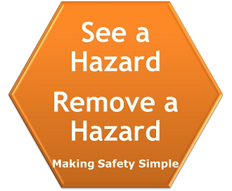

Workplace Hazards and Risks
Hazards
A workplace hazard is a source or situation that has the potential to harm or damage. Hazards at work may include:
- wet and slippery surfaces
- poor housekeeping
- stairs
- a repetitive job
- working with heights
- chemicals
- manual handling
- electricity
Risks
Risk is the possibility that harm (death, injury or illness) and/or property damage might occur when exposed to a hazard.